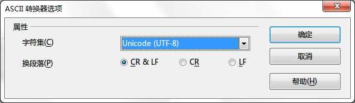

术语表
词汇表是用于 OmegaT 的文件，它由手工创建和更新。
如果某个 OmegaT 项目包含一个或多个词汇表文件，当前处于激活状态的片段中出现的任何术语将自动在 术语视窗 中显示起来。
用法
要使用现有的词汇表，只需在创建项目后将它放到<c0>/glossary</c0> 目录下。在打开项目时，OmegaT 自动检测该目录下的词汇表文件。从词汇表中找到当前激活片段中的术语后，OmegaT将会在词汇表窗口将它们显示出来。

等号之前的单词是源术语，其译法在等号（＝）之后。词条可以有附加的注释（参阅 "及物动词" 了解第二项）。词汇表功能只能找到与词汇表条目精确匹配的词汇（也就是说不会进行形态变化）。在翻译过程中可以手动向词汇表中增加术语（比如在文本编辑器中），但是在项目被重新导入前，新增的术语无法被识别。
文件格式
词汇表文件是简单的纯文本文件，包含了以制表符分隔的三列列表，其中第一和第二列分别对应源词汇和目标术语。第三列用来保存附加信息。词汇表文件可以使用系统缺省的编码方式（以扩展名表示，如：.tab），或者以 UTF-8 (扩展名 .utf8)。出于显而易见的理由，Unicode 编码 (UTF8) 是首选。
如何创建词汇表
如果遵循合理的谨慎态度，下面的方法是万无一失的。你需要 OpenOffice.org Writer 来完成操作，因此如果你没有该软件，请下载并安装 OpenOffice.org 。启动 OpenOffice.org 并打开一个新的文本文档或启动 "OpenOffice.org Writer"。
在空文档中按照下列方式录入术语：术语原文，TAB间隔，术语的目标语言译法，TAB间隔，该词条的注释或解释，回车符。TAB间隔是键盘左手边的 TAB 键。如果不想输入注释，可以省去第二个 TAB 间隔。"术语"可以是一个单词或一条短语。在第二行，进入第二条术语及其翻译。
在完成术语录入工作后，您将有两“列”术语，术语原文在左边，其目标语言的译法在右边，可能还会有包括注释和解释的第三列，在 Writer 软件的标准书写条点击 ¶ 图标可以让 TAB 间隔（下例中的 → ）和回车符 (¶ ) 变得可见。下面是几行英语－德语词汇表:
word →Wort→das (-/e/s, Wörter/-e)¶
small house→Häuschen→das,
(pl Häuschen)¶
dog →Hund→m, f Hündin ¶
horse→Pferd→n, m Hengst f Stute n Fohlen¶
请勿使用 OpenOffice.org 的 "列" 功能创建术语表的列：仅需在原文－目标语言术语对之间使用一个TAB间隔。
在完成词条的录入后，选择文件 > 另存为。在 "文件位置" 框中为术语表文件输入以.utf8为扩展名的文件名，,(例如： "MyGlossary.utf8")。对于"过滤器"，选择 "文本编码(.txt.)"。 取消选中 "自动文件扩展名" 框并激活 "编辑过滤器设置":

点击“确定”确认。将出现一个提供"是" 或 "否" 两种选项的对话框。选择 "是" 以使用文本编码文件格式存盘。
在 ASCII 过滤器选项对话框（见下），选择 "Unicode (UTF-8)" 作为字符集:

点击“确定”确认。
创建 OmegaT 项目之后，将该文件复制或移动到项目的\glossary 目录中。如果项目已经打开，复制词汇文件后重新加载项目。可以对正被项目使用的词汇表文件进行修改。词汇表修改大约每秒钟就会被检测一次，且修改会在后台透明地被加载，因此在保存新词汇表文件之后无需重新加载项目文件。
当包含了源文本术语的片段被打开后，词汇表窗格将显示出源片段中可在词汇表中找到的词条（或者多个词条——可以有多个词汇表保存在 glossary 的子目录中）。使用 Multiterm
使用 Trados Multiterm 的文本导出功能的创建的词汇表不做任何修改就可以用作 OmegaT 的词汇表，只需以 .tab为扩展名，并让对应的源词汇和目标术语分别为头两个字段。如果使用 "Tab-delimited export" 系统选项导出，你必须删除感兴趣的 2 列之前的头 5 列(词条编号, 创建日期等等）。
常见词汇表问题
- 问题: 未显示术语表术语。
- 可能原因:
- "glossary" 目录中没有术语表文件。
- 术语表文件为空
- 词条未使用 TAB 字符分隔
- 术语表文件未使用正确的扩展名(.tab or .utf8)
- 术语表词条和文档中的原文未完整匹配－－例如该词条是复数形式
- 术语表文件没有采用正确的编码
- 当前片段中没有任何术语与术语表中的术语相匹配
- 上述一个或多个问题已经被修正，但项目还没有被重新载入。
- 问题: 在术语表面板中某些字符显示不正确（但在编辑面板中同样的字符能够正确显示）。
- 可能原因: